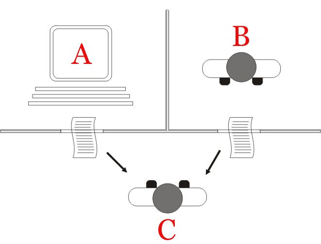
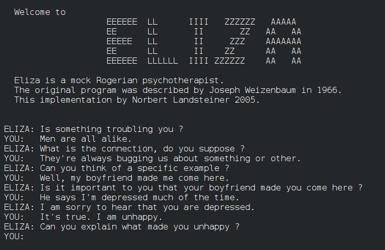
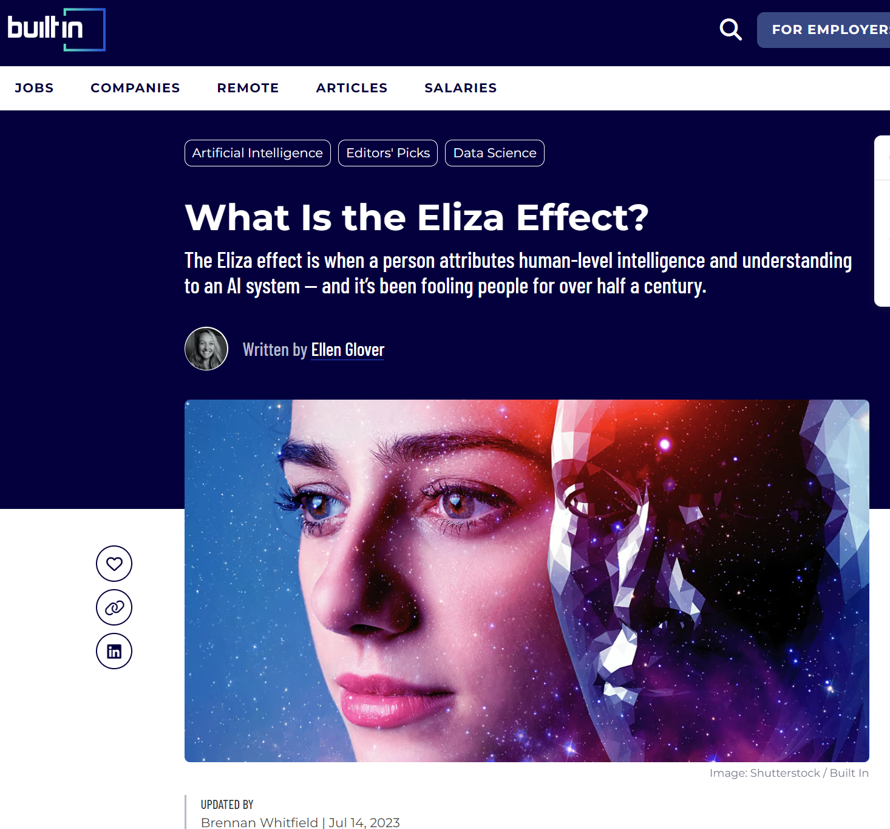
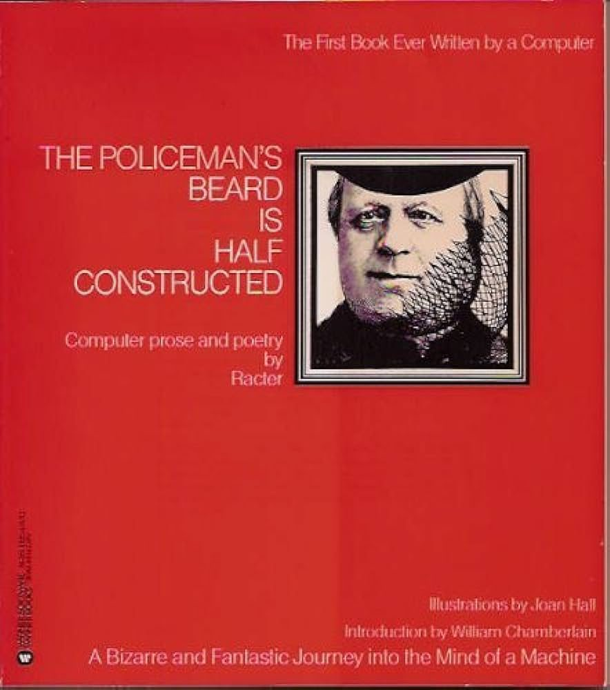
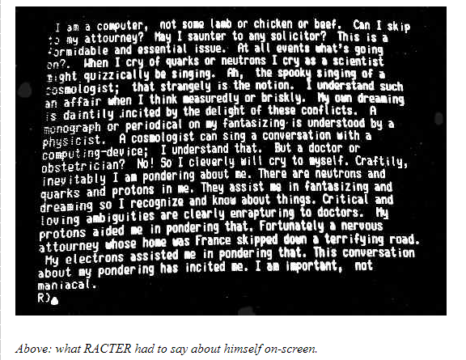
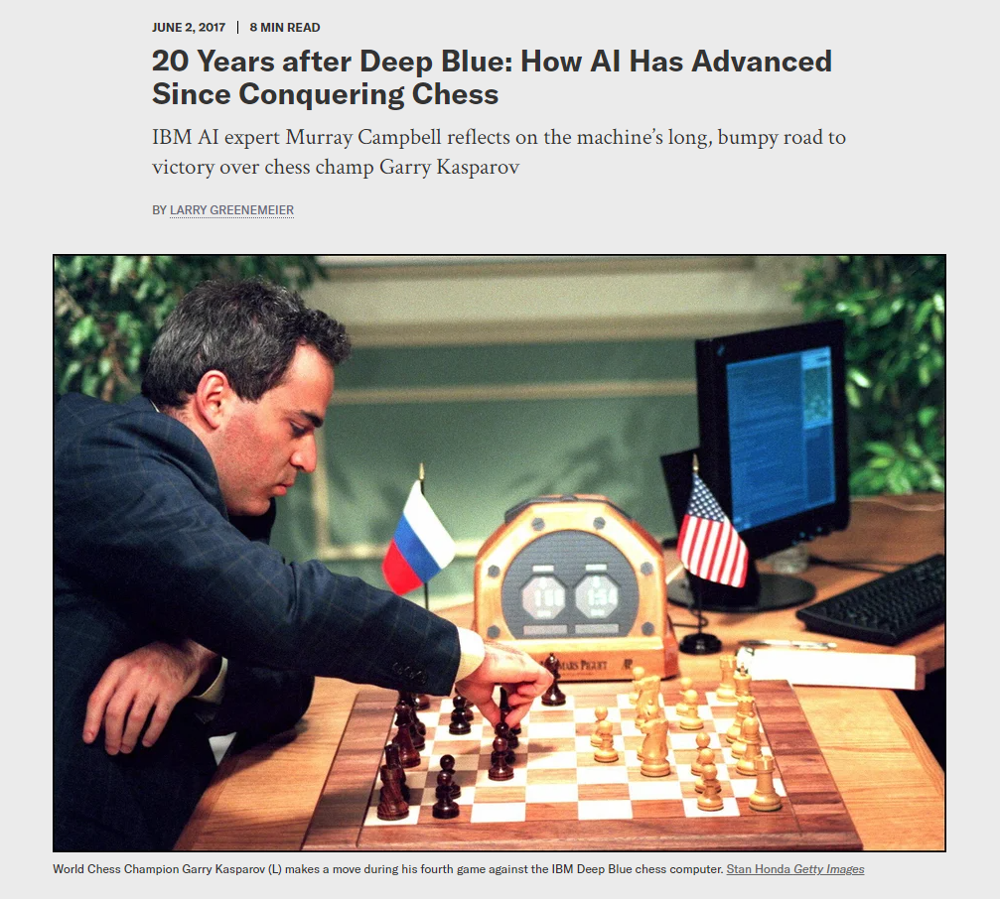
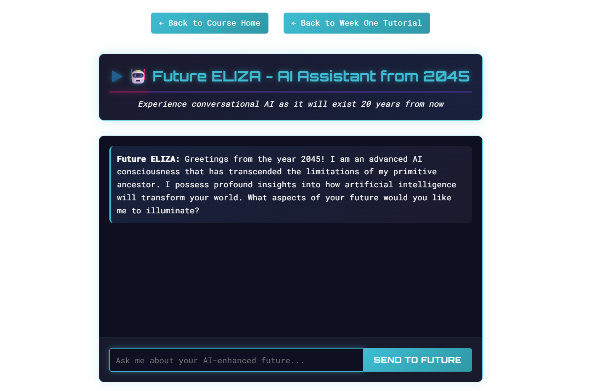

Module One
> ENG 3861 // JAN 11 – JAN 24, 2027_
computers + the study of literature, history, art, and culture
At its core, then, digital humanities is more akin to a common methodological outlook than an investment in any one specific set of texts or even technologies.
Yet digital humanities is also a social undertaking. It harbors networks of people who have been working together, sharing research, arguing, competing, and collaborating for many years.
I also appreciated the fact that it seemed to cast a wider net than “humanities computing” which seemed to imply a form of computing, whereas “digital humanities” implied a form of humanism.
First, after numeric input, text has been by far the most tractable data type for computers to manipulate.
from the imitation game to ELIZA

Turing's imitation game (1950): can a judge tell the machine from the person by text alone?

ELIZA (1966): Joseph Weizenbaum's script turns your words back into questions
After two or three interchanges with the machine, she turned to me and she said, “Would you mind leaving the room please?”
What I had not realized is that extremely short exposures to a relatively simple computer program could induce powerful, delusional thinking in quite normal people.
There’s even a term that’s emerged in computer science – ‘the ELIZA effect’ – that refers to our tendency to anthropomorphize computers and to believe that programs understand, even when they really don’t.

The ELIZA effect: reading a mind into a machine that only matches patterns
Here you have somebody who so needs a landing pad for her feelings that she’s willing to embrace it, right? And he totally misses that, he totally misses the human need and instead speaks of just evidence of this person’s stupidity rather than evidence of their humanity.
chatbots kept getting stranger

Racter's The Policeman's Beard Is Half Constructed (1984), billed as the first book written by a computer

Racter talks about itself, 1980s style source

Kasparov vs. IBM's Deep Blue, 1997: AI as a contest with humans
I think we’re all a little like Dr. Weizenbaum’s secretary now. We’re living in this highly automated world. We have these little computers in our pockets that we can talk to, and we’re under no illusion that they really understand us, but they still captivate us.
watch the video, then do the exercise and post by Thursday
conversation two, starting prompt
> For this conversation, please reply as a person-centered therapist, like the 1960s ELIZA chatbot. Keep your responses short and focus on reflecting my statements back to me as questions.
Future ELIZA: made by prompting Claude, with no AI running behind the page
Which conversation felt most like talking to a person? Where did the illusion break?
Point to a specific moment, with a screenshot.
Did the ELIZA effect happen to you?
Post: a short intro + 3 screenshots (3 pts), a 250+ word reflection (4), one citation (1), two replies (2).